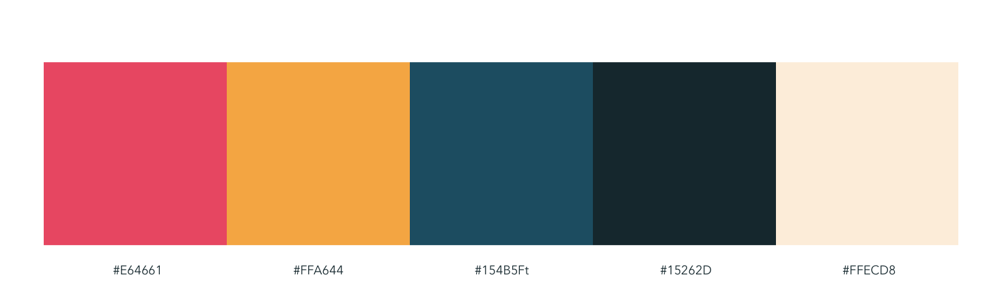

The Challenge
Our sponsors asked for a mobile app about Hyecho (a young Korea monk in the 2nd century, which is also the protagonist in their newly published book) that can enhance the visiting experience in an upcoming Buddhist art exhibition, increase young people’s interest in Buddhist art, and have educational value beyond and after the exhibit. We helped them prioritize their goals through user research. Half way through the project, we found out that the museum is developing similar products and that museum curators are also stakeholders in this project. We needed to switch gear for the mobile app and deliver an ipad app in a short time. I have been challenged to adapt to the tension between what stakeholders want and what users need, between our assumptions and the changing project requirements.
Empathize and Define
Competitive Analysis
We looked into the existing apps for museums and exhibitions, and highlighted features including gamification, different ways of sorting objects, showing relationship between objects, and social interaction.
User Interviews
We conducted 21 in-person user interviews and used the value proposition canvas to align user needs to our product direction. We found two pain points that need to be addressed: 1) many people do not see a companion app for an exhibit necessary; 2) many people associate Buddhism and art exhibit with being boring.
Survey
To relieve the first pain point found in the interviews, we referred to users’ need of extra information and decided to add audio guide to the app. We conducted a survey on audio guide and received 32 responses. We found that 93% of the respondents find audio guide helpful in perceiving new information, and 75% percent of them have used audio guide in a museum.
Data from the Museum
We requested a visitor study report from the museum, which contains over 1500 entrance-exit surveys, an observation study, and an interview study with over 70 interviews. We got robust information on the demographics and behaviors of the visiters, which helped us create our personas.
{kind=link}
{kind=link}
{kind=link}
{kind=link}
I made an journey map illustrating the experience of our main persona
Ideation and Change
Initial Ideation
The first challenge was to help sponsors prioritize their goals. Since we are making a museum companion app first and foremost, we persuaded sponsors to prioritize enhancing the visiting experience and strive for educational value instead of trying to market Buddhist art with the app. With the journey map, we identified the two major pain points we need to address in our design: 1) No engaging story is provided to contextualize the exhibit for users; 2) No in-depth information about the artworks is provided by the museum in any form. These two pain points corresponds with two types of visitor behaviors we found from existing literature: people either follow a structured tour or freely choose what to look at.
Therefore, our app provides two options upon opening: 1) following a structured journey that ties the objects to Hyecho's journey; 2) browsing and searching for objects in an object inventory. To engage visitors, especially younger visitors who are like our persona David, we design fun interactions that tells interesting facts about the artworks. We also designed leveled audio guides that allow users to choose the type of content they want to hear.
One big difficulty was to connect the exhibition objects to Hyecho, because they are different kinds of Buddhist artworks from different time periods and are not necessarily related to Hyecho. We finally managed to group 21 objects by their geographical locations and map to the areas Hyecho went to in the 2nd century.
{kind=link}

{kind=link}
Storyboards and low-fidelity prototypes used to communicate initial ideas with stakeholders
{kind=link}
I put together app flow version 1 with the help of Rebecca and Sindhu
"Plot Twist"
At the end of April, we had our first meeting with people from the museum. To our surprise, instead of having 21 objects, there are actually only 8 objects in the Hyecho related exhibition, which meant that our object-centered design and object groupings do not work anymore. The museum is also developing a series of "podcasts" that will serve as 20 minute audio guides. Our initial idea about the phone app overlaps too much with what they were developing. The museum also wants to put tethered iPads beneath Hyecho's statue and wants us to develop a tablet app for the devices, which is a brand new requirement. We did not know that the team at the museum are also important stakeholders until midway through the project.
After taking some deep breaths, we came together and started brainstorming alternative directions for our phone app and how the two apps can compliment each other. After going through the new object selection, the content of the book written about Hyecho, and rounds of sketches, we decided to make our phone app a narrative about Hyecho's pilgrimage, divided into 8 chapters, and weave the objects into it, instead of being centred around objects. Our tablet app will be an interactive map that introduces the important locations related to Buddha's life that Hyecho went to, which will provide simple, informative experience on the tethered apps.
{kind=link}
{kind=link}
Usability Testing
We conducted one round of in-person usability testing in the summer and it helped us resolve our mobile app navigation. In the initial design, we used the commonly adopted bottom navigation bar and top status bar with a back button. In our new design, we have eight chapters and each chapter contains an introduction page, an object page, and an interaction page. There is increased need to go back and forward between these pages. iPhones are also getting bigger and I started to see iOS apps put important functionalities at the bottom closer to the thumb. We decided to put back and forward buttons at the bottom and use the infamous hamburger menu to contain pages that will not be frequently used.
We asked users to compare the two navigation models with prototypes and found that the bottom back and forth button with hamburger menu is preferred. In our latest testing with the launched app, over 85% of users do not have any difficulties navigating the app.
Before launching the app, we conducted 9 structured usability tests and guerrilla usability tests. We modified the app based on user feedback and summarized spaces for improvement for our clients.
Two test models and the final design
Making of the iPad App
It was summer break after the big change in stakeholder requirements and app flow. I did an internship at Teletracking and designed the ipad app during my time after work. After deciding on the structure with stakeholders, I iterated on the visual style of the app to make it more eye-catching and fun.
Early concepts including a comic book inspired layout

Version 1: Using the same colors as the mobile app, but feels too serious
New color palette inspired by the rich colors of Buddhist art
Icon and Illustrations
I designed the icon for our apps and made illustrations to enhance the immersiveness of our interactions.